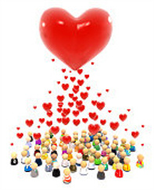

Hytale - Удивительная и неизведенная игра. В ней всё круто. От графики и музыки жо гемплея и анимации. В ней есть много всего из других игр.
TES - The Elder Scrolls
Серия TES славилась своей попурярности за счёт глубины ролевой игры и иследования. А ещё там было очень много модов. Но речь пойдёт сейчас не об этом.
В игре TES есть такие вещи как иследования подземелья, инвертарь и создания оружия. В Hytale это всё тоже будет причём подземельля будет генерироваться а оружие можно будет создавать ещё больше.
Minecraft
В Stardew Valleyinecraft весь мир состоит из кубиков. В игре Hytale всё будет тоже самое и даже лучше.
Stardew Valley
В первом трейлере есть момент с феромой где кто-то поливает огрод а кто то есть морковку. Так вот этот момент похож на игру Stardew Valley мы должны ухаживать за огородом, фермой и так далее.
Portal Knights
А вот из этой игры были взяты те самые порталы которые нам обещают разработчики игры Hytale. Если вы незнаете что такое Portal Knights то советую вам поиграть в неё
Вообще игра Рнефду это главное сердце других игр. вот ещё список игр но описывать я их не буду
- Серия игр - GTA
- Серия игр - Zelda
- Follaut 3 и Follaut 4
- Серия игр - Властелина колекц
- Серия игр - Half-Life
От игры Half-Life были взяты шахты. Из Gta можно взять города, живой мир и прогулке куда хочешь куда и иди. Из Follaut можно взять убежища (хотя их и нет но это можно создать с помошью модов) а также инвертарь. Из Zelda можно взять борьба мечом с драконом и те же подземелья. Из властелина колец можно взятьпауков в пещерах. Этот момент есть в трейлере игры Hytale.
Кароче говоря Hytale Это главное сердце других игр. Это король. Это повелитель всех других игр. Только сейчас стало известно уто повелитель всех других игр.